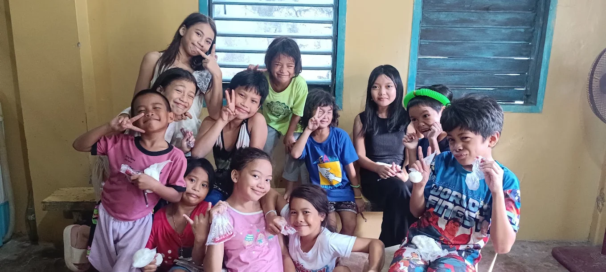
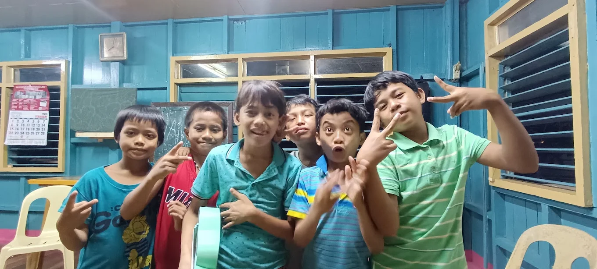
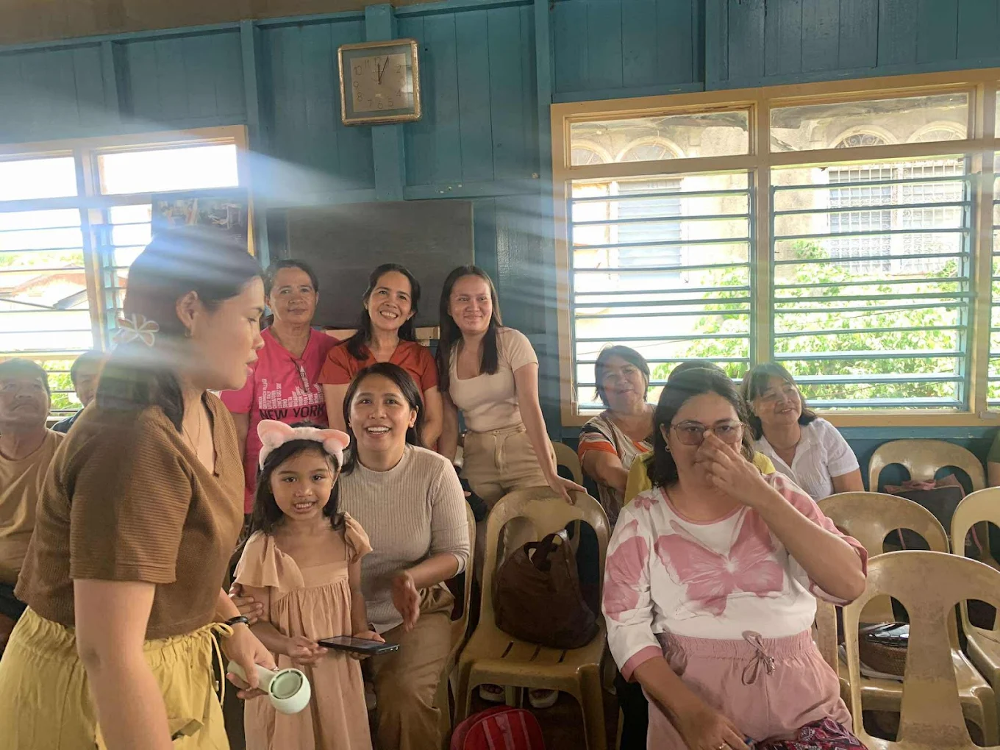
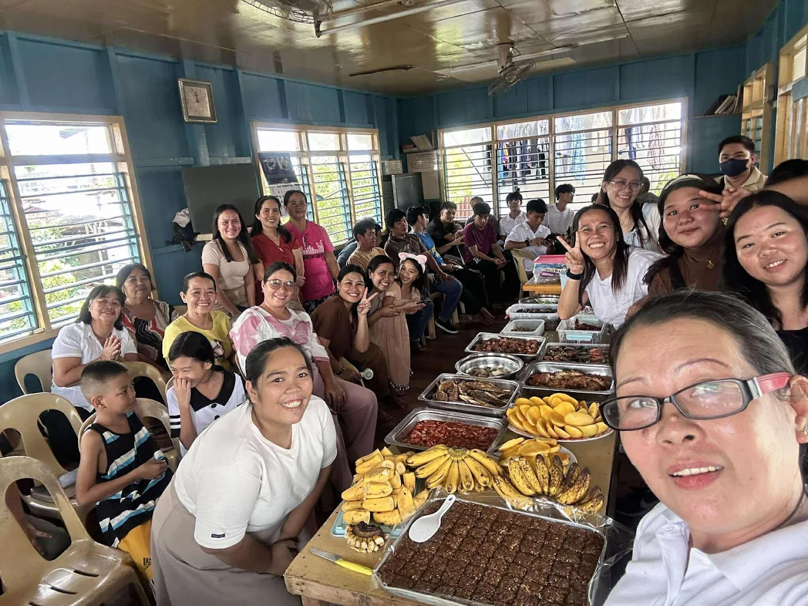

ABOUT THE CHURCH
Our Church Community
National Catholic Apostolic Church — District Mambaling (Puntod Alaska).
A local community of faith
This website is a simple online home for the National Catholic Apostolic Church in District Mambaling (Puntod Alaska).
The photographs shared here show the people who make up the community: families, children, youth, and adults gathering together for fellowship, food sharing, music, and other activities.
The site is intentionally kept simple so that the church information and community photographs remain easy to read and access.

Community Life
Fellowship
Gathering together, sharing food, conversation, music, and time with one another.
Youth & Families
Children, young people, parents, and other members are part of the community gatherings shown in these photographs.
More Photos




Contact Us
| Church | National Catholic Apostolic Church |
|---|---|
| District | District Mambaling (Puntod Alaska) |
| Contact | 0956 225 6958 |
| ncacdistmambaling@gmail.com | |
| Address | District Mambaling ( Puntod Alaska ) |